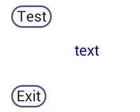

|
Getting
started with HEW Here I will show you how to get started with writing apps with RFO-Basic and HEW. Development Environment 1. Download the rfo-basic interpreter. On you phone, go to Google PlayStore and install rfo-basic, preferably v1.80+. 2. Transfer source files from PC to phone. rfo-basic expects
*.bas files in the
directory /mnt/sdcard/rfo-basic/source data files in /mnt/sdcard/rfo-basic/data and database files in /mnt/sdcard/rfo-basic/database. For now we are only dealing with the *.bas files. I recommend you use a wifi connection to your home router. FTP The easiest way to transfer files is to install an FTP server on your phone and an FTP client on your PC. or SMB server Instead of FTP, advanced users with a rooted device, can install a samba server on your phone. Goto playstore and install Samba Filesharing by funkyFresh. If you are using windows, you need to map a drive letter to Samba on your phone e.g \\192.168.1.101\\phone_share_name If you are using linux, see here. Again the host\share is given by the samba app on your phone e.g \\192.168.1.101\\phone_share_name. 3. Launch your .bas file by passing it to the interpreter. Once you can transfer files from your PC to your phone, you can launch the main program by passing it's name to the basic interpreter app. Create a shortcut to the rfo-basic interpreter (launcher shortcut) on your phone desktop as you would normally do by long pressing the desktop and select 'shortcut' or 'widget'. You will find the basic interpreter shortcut available. Fill in the following fields; Program File Name : try.bas Icon File Name: <blank> (It will say the icon file will be default, just ignore this.) Shortcut Name: try Now, when you press the icon it will always launch the interpreter passing try.bas as the main program and run it. And that's it ! After you edit your main program on your PC, copy it over as 'try.bas', and then press the icon. Some editors allow you to configure the function keys to automatically copy files to other places. Or you can write a batch script to do the job (see here). Your first HEW program.  Unpack and copy these files ( short_demo.zip ) to rfo-basic/source on your phone. The main program is; main.bas is the program to run. (rename it to your shortcut to run with the icon). Let's have a look at it : include text.bas % text widget include button.bas % button widget %--------------------------------------- include isr.bas % interrupt handling include themes.bas % widget colors include event.bas % event loop include init.bas % init screen, and globals %--------------------------------------- init_hew() bundle.get 1, "scr_w", scr_w bundle.get 1, "scr_h", scr_h bundle.get 1, "widgets", widgets bundle.get 1, "txt_h", txt_h % create objects gr.text.typeface 3 % sans serif gr.text.size txt_h wg_txt = text_make ("", "text", scr_w/3, scr_h/2) wg_btntest= button_make ("", "Test", 4, scr_w*1/20, scr_h*3/10) wg_btnexit= button_make ("", "Exit", 4, scr_w*1/20, scr_h*6/10) % build event detection list list.add widgets, wg_btntest, wg_btnexit gr.render % show objects %--------------------------------------- do % main loop wg= event_get () % get an event if wg=0 then end % bakkey pressed, end program bundle.get wg, "type", wtype$ if wtype$="button" then call button ("flash","",wg) % flash it sw.begin wg % execute widget callbacks sw.case wg_btntest % test button pressed call text_do ("text", "button pressed!", wg_txt) gr.render rem gosub to_your_code_here sw.break sw.case wg_btnexit % exit btn pressed end sw.break sw.end until 0 end %======================================= % gosub code here % include any other gosub code here % include your_code_here %======================================= end As you can see, after some initialisation, some widgets are created and put in a detection list. A main loop calls event_get() which detects for a touch and returns the touched widget. A switch statement then calls some code depending on which widget was touched. That's all. It is up to you to modify this skeleton and add your own code to do other stuff. (the reference manual is here) Code Breakdown At the top of the code are include files for widgets. They are all functions. You need only include those widgets that you actually use. (Having said that, there may be some widget which depend on other widgets, so those files have to be included too.) Then comes the minimum requirement (must be included); isr.bas - interrupt handling themes.bas - colors that are used to paint widgets. event.bas - a detection loop Init.bas - initialises the screen, and saves some variables into global bundle(1) (a global values hack).
These values can later be recalled using bundle.get 1,
"name",variable This ordering is not important because they are functions. You MUST call init_hew() at the start of your program. Widget Creation Widget creation is now standardised inside the main program. This makes it easier to include init.bas for other projects. Most widgets have a 'make' function. Most widgets are created only once to save memory. The same type of widget can be created many times (i.e an instantiation), a different bundle ID will be returned each time. To create a widget you can
wg =
widget_make
(some,parameters,,..) or use event_addlist.add widgets, wg
wg =
widget_make
(some,parameters,,..) call event_add (wg) Add on one line many widgets;
list.add
widgets, wg1,wg2,wg3.. or you can pick & choose which widgets to detect and in what order;
wg1=widget_make
(.. wg2=widget_make (.. wg3=widget_make (.. list.add widgets, wg3,wg1 You only need to add "detectable widgets" to the detection list. Some widgets don't need detection, (e.g 'text' widget) so just wg_txt = text_make ("", "text", 100, 100) is suffice. The main detectable widgets list 'widgets' is put into the global '1' bundle ready for event.bas. The main loop calls event_get() (event.bas) which detects touches in an infinite loop. If a widget is detected, it will return the widget bundle id. You can get the widget details using this id, for example, it's "type" (you could just as easily have used the widget bundle id instead if you had saved it somewhere, but in this example the "type" is used to see if it's a button). Note: the 'type' should be available for all detectable widgets (like buttons). % gosub code here This is where your code comes in. You should include your code somewhere at the bottom here and gosub to it from the switch statement depending on which widget was touched. End. |